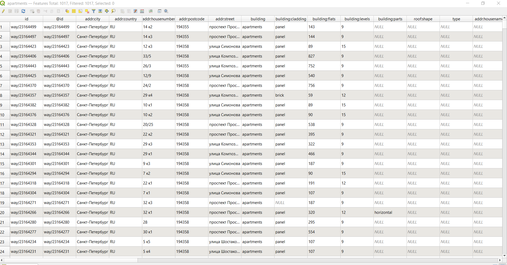

6 Загрузка данных с OpenStreetMap
OpenStreetMap (OSM) — проект, который создаёт и предоставляет свободные географические данные, дает возможность создавать карты любому пользователю. Каждый желающий может поучаствовать в проекте (загружать свои треки на сервер, дорисовывать общедоступную карту по спутниковым снимкам Bing, MapBox, DigitalGlobe (весь мир), IRS (запад России), SPOT4 (восток России) и SPOT (Белоруссия) от Космоснимки.ру, ASTER (Россия), OrbView-3 и другими) и использовать эти карты совершенно свободно, и бесплатно в отличие от многих других карт, даже бесплатных, свободное использование которых ограничено.
Карты этого проекта очень широко используются как в некоммерческих целях, например, для исследовательских проектов, так и для коммерческих проектов, например, создания навигационных приложений.
Вот очень любопытный прецедент использования OSM в нашей стране.
6.1 Сервис overpass-turbo
Один из самых простых способов скачивания пространственных данных с OSM - это использование сервиса http://overpass-turbo.eu/.
Есть еще вот такой сервис русскоязычный, но там довольно много ограничений в бесплатной версии.
Подробная информация о сервисе https://wiki.openstreetmap.org/wiki/Overpass_turbo
Для создания запросов используется собственный язык запросов Overpass QL (Overpass Query Language)13.
Есть несколько различных типов формулировок Overpass QL . Они сгруппированы в:
Параметры, которые являются необязательными глобальными переменными, устанавливаются в первом операторе запроса. Примерами настроек являются тайм-аут сервера для сервера Overpass API и формат вывода запроса Overpass QL.
Операторы блока : операторы блока группируют операторы Overpass QL вместе.
Автономные запросы: это самостоятельные полные утверждения. Они могут выполнять такие функции, как запрос к серверу Overpass API для создания набора; манипулирование содержимым существующего набора; или отправка конечных результатов запроса в место вывода. Автономные запросы сами по себе состоят из более мелких языковых компонентов Overpass QL, таких как оценщики, фильтры и операторы.
На самом деле, чтобы составить запрос вам не обязательно знать все тонкости языка запросов. Вот основные моменты, которые необходимы для запроса:
- то, как объекты обозначаются в OSM - ключ и его значение;
- тип объектов (не обязательно, а только, если вы хотите выгружать конкретный тип объектов - точки, линии или полигоны);
- охват территории поиска - bounding box (по умолчанию задается по видимой части карты в правой половине окна, но можно задать непосредственно в запросе или выбрать вручную на карте).
Подробная информация о том, какие объекты как обозначаются в OpenStreetMap. На этой странице можно искать нужный вам тип объектов, чтобы составить запрос.
В левой части окна будет отображаться выполняемый запрос, а в правой результаты этого запроса. По умолчанию поиск осуществляется в той области, которая отображается в правой части окна (это можно скорректировать более сложными запросами, см. справку о сервисе).
Для составления запросов используется помощник. Обратите внимание, что в нем сразу можно использовать логические операторы.
Для выполнения дальнейшей работы предлагается найти и загрузить данные по многоквартирным жилым домам (building=apartments) и основным магистральным улицам (highway=primary or highway=secondary or highway=tertiary, то есть центральные магистрали, основные магистрали районов и основные микрорайонные или межмикрорайонные транзитные улицы) в Санкт-Петербурге.
Первый запрос по поиску жилых домов выглядит примерно так. Обратите внимание, что я убрала пункт node, чтобы у нас не производился поиск точечных объектов.

В результате запроса получим объекты на карте

В нижнем правом углу окна видно, сколько объектов какого типа было найдено, а сколько отображено.
Эспортируем результаты себе на компьютер для дальнейшей работы с ними в QGIS. Для этого нужно нажать кнопку Экспорт, после чего появится диалоговое окно экспорта.
Данные можно сохранить себе в формате geojson, о котором говорилось в предыдущем разделе 5, кроме этого формата данные также можно скачать в GPX, KML, в виде сырых данных, а также в виде данных для редактирования OSM.
Предварителльно проверим свой файл в сервисе geojson.io.
Здесь достаточно будет просто перетащить ваш файл в правую часть окна. Если с файлом все в порядке и геометрия валидна, то на карте должны отобразиться объекты, а в правой части будет структура geojson файла.

Откроем полученные данные в QGIS.
Если у вас сохранился проект, который вы делали в разделе 3, то вы можете открыть его и добавлять данные туда. Если нет, то просто откройте новый пустой проект.
Добавление слоя осуществляется аналогично добавлению данных из csv файла в 3, с небольшим отличием: нужно выбирать вариант Слой — Добавить слой — Добавить векторный слой.

Далее в диалоговом окне нужно указать путь к файлу.

На самом деле не обязательно пользоваться строкой меню и ее пунктом Слой, все то же самое можно делать через окно Браузер в левой части интерфейса. Это скорее вопрос привычки.
Но нужно помнить, что процесс открытия через строку меню более контролируемый.
Если вы открыли новый проект, то в нем нужно выполнить перепроецирование на лету и добавить подложку. Как это сделать было описано в 3.
Если вы работали в сохранненом с предыдущего занятия проекте, то вам этого делать не нужно, так как это уже было выполнено.
В результате должно получиться что-то подобное.

Карта с добавленной подложкой и слоями жилых многоквартирных домов и супермаркетов
Аналогичным образом нужно загрузить данные об улицах и добавить в проект.

Карта с добавленными слоями жилых многоквартирных домов, улиц и супермаркетами
В таблицах атрибутов будет содержаться информация об объектах, которая внесена в OSM.
Открыть таблицу атрибутов слоя можно из контекстного меню, которое открывается правым кликом на название слоя.

Атрибуты - это те характеристики объектов, которые не являются пространственными.
Таблица атрибутов открывается в отдельном окне.

При необходимости мы можем добавлять и удалять отдельные поля, а также осуществлять операции между полями (об этом чуть подробнее будет на следующих занятиях).
Для добавления и удаления полей нужно включить режим редактирования таблицы в ее панели инструментов (значок ). После этого в панели инструментов таблицы станут активными кнопки добавления и удаления полей  .
.
При удалении полей следует просто выбрать поля, которые вы собираетесь удалить в перечне (можно выделять сразу несколько названий полей, используя кнопки Shift и CTRL).
При добавлении нового поля обязательно нужно задать его имя и тип данных, которые будут в нем храниться.
Overpass API/Overpass QL https://wiki.openstreetmap.org/wiki/Overpass_API/Overpass_QL↩︎